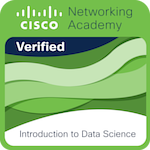
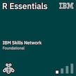
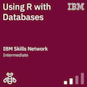

CV
Desarrollador de Software

Rebeca Camacho Rodriguez
- Email: rebecacamachordz45@outlook.com
- Teléfono: +52 81 2223 5401
- Direccion: San Nicolas De Los Garza, Nuevo Leon, Mexico
Sobre Mi
Estudiante de desarrollo software, donde compartiré mi progreso académico, proyectos y tareas relevantes.
Educación
- Cursando Ingeniería en Desarrollo Software - Universidad TecMilenio
Idiomas
- Inglés: Nivel 4
- Español: Nativo
Intereses
- Aficionado al dibujo digital, lo que ha fortalecido mi capacidad para pensar de manera creativa, resolver problemas visualmente y colaborar en proyectos que requieren un enfoque estético
- Desarrollo y diseño Frontend
Habilidades
- Trabajo en equipo y organizacion
- Programación básica (Python, Java, C++)
- Desarrollo web (HTML, CSS, JavaScript)
- Análisis de datos y estadística (Python, R)
Insignias
-   